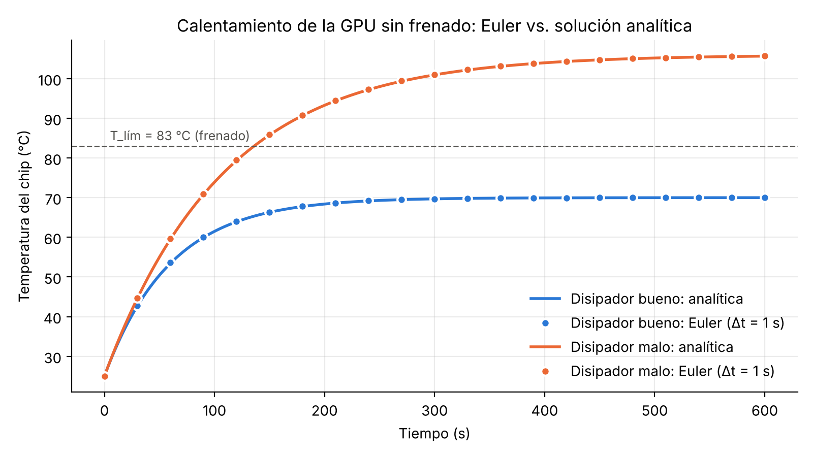
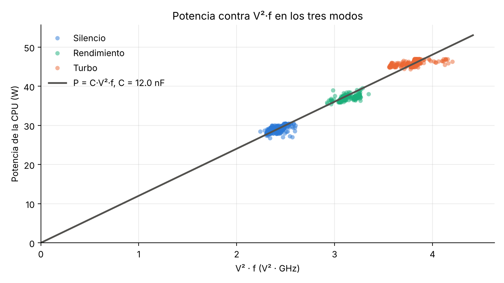
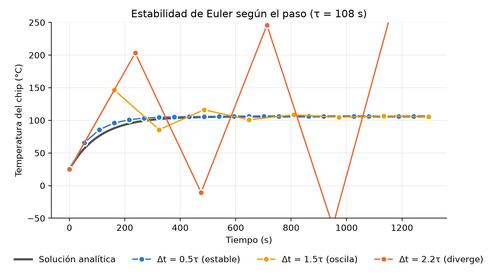
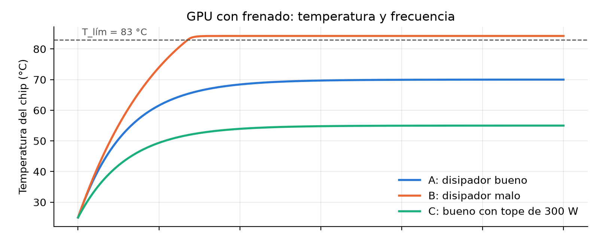
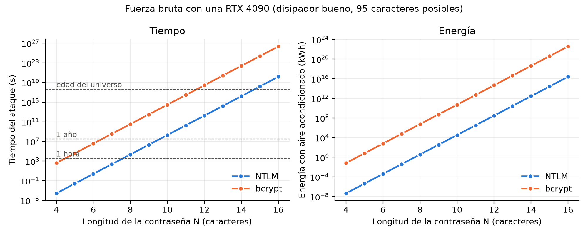
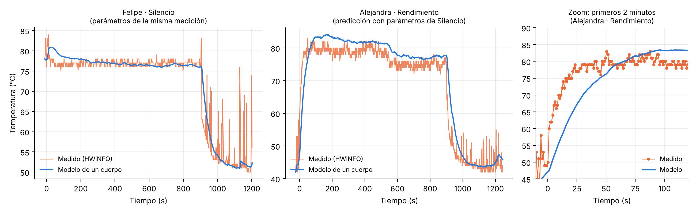

La idea. Cada intento del ataque es trabajo eléctrico que termina como calor. El calor sube la temperatura del chip, el chip frena para protegerse, y eso decide cuánto tarda el ataque y cuánta energía gasta.
Cómo leer el póster. Cada fila toma una ecuación que vimos en clase, la adapta al chip y la convierte en una función de Python.
De la física del curso al código cinco traducciones, en el orden en que las usa la simulación
La temperatura hace de voltaje, la potencia de corriente, el disipador de resistencia y la masa de condensador. El calor sale como la corriente por una resistencia: ΔT = Rth·P (ley de Ohm, semana 11).
def F(t, T): # dT/dt: lo que entra menos lo que sale return (P - (T - T_amb) / R_th) / C_th # solución exacta, como la del RC T_amb + P * R_th * (1 - np.exp(-t / tau))

Cada ciclo de reloj carga y descarga los transistores: cuesta C·V2, y hay f ciclos por segundo. Si es cierto, P contra V2f es una recta por el origen y su pendiente es C.
x = V**2 * f # V²·f de HWiNFO C_ef = np.sum(x * P) / np.sum(x**2) # recta por el origen (semanas 16 y 19) # control: intercepto libre (C, b), *_ = np.linalg.lstsq(...)

La pendiente F es la de la fila 1. Cada paso multiplica la distancia al equilibrio por (1 − Δt/τ): si Δt > τ oscila y si Δt > 2τ diverge.
def euler(F, T0, dt, t_final): ... for k in range(n): T[k+1] = T[k] + dt * F(t[k], T[k]) return t, T

Dos frenos: un tope de potencia y uno térmico que baja la frecuencia φ = f/fmáx. Ahora P depende de T: la ecuación de la fila 1 deja de ser lineal y solo Euler la resuelve.
phi_T = min(1, max(PHI_MIN, 1 - K*(T - T_LIM))) return min(phi_P, phi_T) # el más estricto F = lambda t, T: (potencia(phi(T)) - (T - T_AMB) / R_th) / C_TH t, T = euler(F, T_AMB, dt, t_final)

hasta n = 95N
Como la batería: tiempo = combinaciones ÷ velocidad y energía = ∫P dt. Pero la velocidad sale de la temperatura, así que las integramos junto con T en el mismo paso de Euler.
T += dt * (P - (T - T_AMB) / R_th) / C_TH n += dt * r # intentos E += dt * P # energía # tras 20τ ya está en equilibrio: t_resto = (total - n) / r kwh = E * (1 + 1/COP) / 3.6e6

¿Funciona con chips reales? Lo medimos.
Pusimos a trabajar dos portátiles y registramos temperatura, potencia, voltaje y frecuencia cada segundo con HWiNFO. Con la curva de enfriamiento medimos τ; con carga y reposo, Rth = ΔT/ΔP. Después le dimos al modelo de la fila 1 la potencia medida y comparamos su temperatura con la del sensor.

Resultado: la longitud manda
| Contraseña (NTLM, RTX 4090) | Tiempo | Energía* | Costo (Enel) |
|---|---|---|---|
| 6 caracteres | 2,5 s | 0,0004 kWh | menos de $1 |
| 8 caracteres | 6,1 h | 3,69 kWh | $3.183 |
| 10 caracteres | 6 años | 3,3×104 kWh | $28,7 millones |
| 12 caracteres | 57.000 años | 3×108 kWh | $259.256 millones |
* Incluye el aire acondicionado que saca el calor del cuarto (COP = 3).
Un piso que nada puede bajar
Borrar un bit cuesta como mínimo kBT ln 2 (principio de Landauer). Con eso, ni la energía del Sol en toda su vida alcanza para recorrer 215 bits (33 caracteres al azar): AES-256 es imposible por física, no por tecnología.
Límites
- Un solo cuerpo: falla en el primer minuto.
- Potencia reportada por el chip: P = CV²f es consistente, no comprobada con un vatímetro.
- Fuerza bruta pura: con diccionario, «Uniandes2026» cae en segundos.
Conclusión
Con un circuito RC, la energía de un condensador y Euler, todos del curso, se puede simular un ataque real y predecir su temperatura con unos pocos grados de error.
La física del chip cambia el tiempo un 14 %; un carácter más lo multiplica por 95. Lo que protege una contraseña es su longitud.